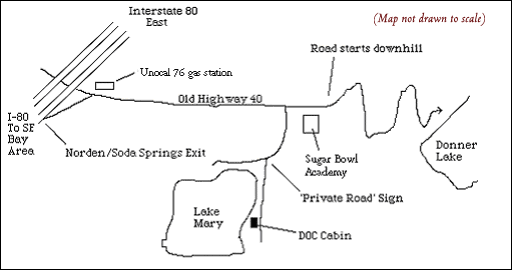
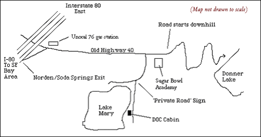

 Return to the DOCNC Home Page
Return to the DOCNC Home PageCarry snow chains from 09/15 – 06/14. You will be stopped if your car is not equipped for snow travel.
Directions start at the Oakland Bay Bridge Toll Plaza.
1. Drive 169 miles E on I-80.
2. Take the Norden/Soda Springs exit. There is a sign before this exit that also includes notification for the Sugar Bowl Ski Resort, which is down the same road.
3. Make a right at the top of the exit ramp (you’ll see a Unocal 76 gas station). Go about 3.9 miles on this road, Old Highway 40 (aka “Donner Pass Road”). You’ll pass two large Sugar Bowl Ski Resort signs. Almost immediately past the second Sugar Bowl Ski Resort sign, you’ll see the Sugar Bowl Ski Academy on your right. There is an odd, tall grey metal shed before the Academy, which is a large, white lodge.
If you pass the Academy, you’ll start heading sharply downhill on a curvy road. If so, you have gone too far!
4. Turn right into the Academy’s parking lot.
If it's Snow Season, you'll need to park here. Make sure you post your parking permit, obtained when you made your reservation, in the windshield.
SNOW SEASON (Oct-June -- The exact “Snow Season” varies widely, of course, but these dates are a general outline): You typically cannot drive up to the cabin during this period because snow blocks the connecting road, which is unplowed and begins at the edge of the Academy's parking lot. Before departing, you must obtain a parking voucher from Mary Choy and display it on your windshield, and then hike/ski/snowshoe the road to the cabin. Note that if there is significant snow, simply walking to the cabin is dificult; you might be “postholing” up to your thighs. Be prepared with appropriate clothing or gear, like skis or snowshoes. Hauling food, bedding, drink, etc. can be a hassle during the snow season too. We recommend bringing a backpack and/or a sled to help with the hauling. If new snow falls overnight, be prepared to venture back to the Academy by 8:00AM the next morning to move your car to allow a full plowing of the whole Academy parking lot. If you do not move your car to enable plowing, the Academy may decide to have your car towed.
** A SPECIAL NOTE ABOUT SNOW SEASON **
In case you didn't grasp this already, the winter walk to the cabin
is not just a mere jaunt up the driveway. It's about a third of a mile,
often cold and windy and can take 20-30 minutes depending on the depth
of snow and amount of gear. If you're prepared as outlined above, it's
relatively simple. If you're not, it can be an experience to keep any city
slicker from ever venturing forth into the Sierras again..... We certainly
don't want to scare anyone away, but we do want you to be aware that accessing
the cabin during the snow season is an adventure in itself.
If it's not snow season, you can drive right up to the cabin and park! Don’t block the road, and be careful not to spin your wheels and get stuck in the gravel.
5. Beginning at the back right of the parking lot is a single-lane gravel/dirt road.
6. Continue about 0.25 miles along this road, curving right. Remember, if it’s snow season, you’ll have to ski, snowshoe or “posthole” in.
7. At the red and white “Private Road” sign on your left (typically buried under the snow during snow season), turn left into the dirt road to the immediate right of the sign itself. Remove the chain across this dirt road, drive through, and re-hook the chain. There is also a small “DOCNC” sign on the post.
8. The cabin will appear in about 150 yards: first cabin on the right,
on the lakeshore.

Return to the DOCNC Home Page